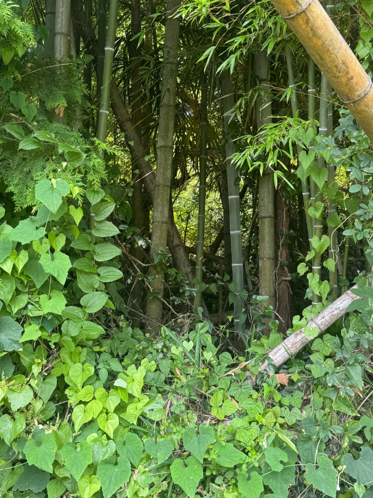
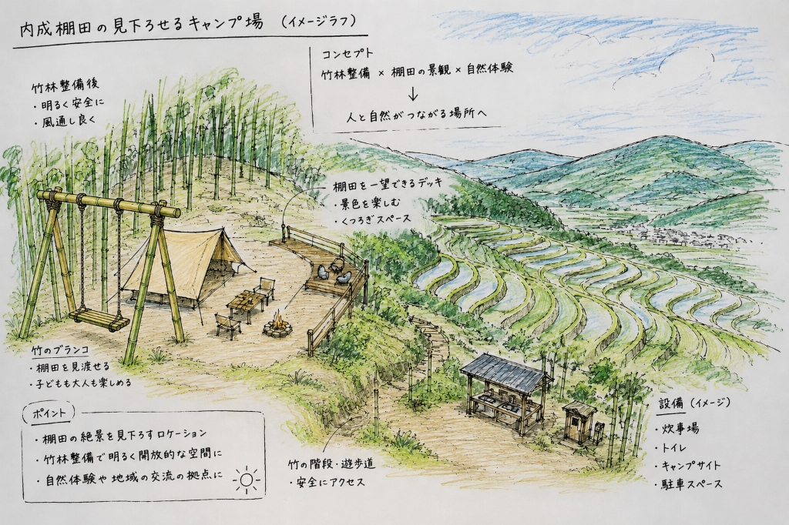

別府の山懐に抱かれた1,300枚の石垣棚田と、その歴史。
大分県別府市南部に広がる「内成（うちなり）棚田」は、農林水産省の「日本の棚田百選」にも選定されている九州を代表する棚田です。
すり鉢状の傾斜地に手作業で積み上げられた石垣は、戦国時代から江戸時代にかけて築かれたと伝えられています。寒暖差のある湧水と陽光に恵まれた土地でおいしい米が育まれてきました。


歴史ある景観を誇る内成棚田ですが、高齢化と後継者不足が進み、現在作付けが行われているのは1,300枚のうち**約650枚（半分）**にとどまっています。
耕作が止まった土地周辺では竹林が繁茂し、日光を遮り石垣を傷める問題が生じています。この状況に対し、別府の地域団体**アソビLAB**が中心となり、竹林の伐採と利活用の取り組みを行っています。
竹林活動の詳細を見る